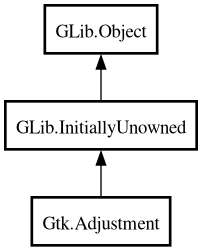

Adjustment
Object Hierarchy:

Description:
[
CCode ( type_id =
"gtk_adjustment_get_type ()" ) ]
public class Adjustment :
InitiallyUnowned
Content:
Properties:
Creation methods:
Methods:
Signals:
Inherited Members:
All known members inherited from class GLib.Object